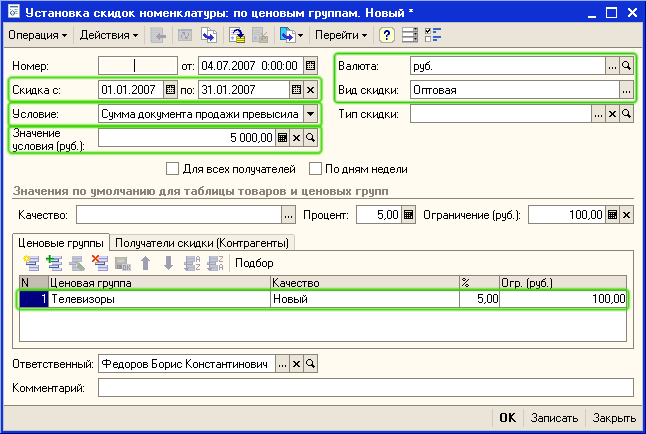
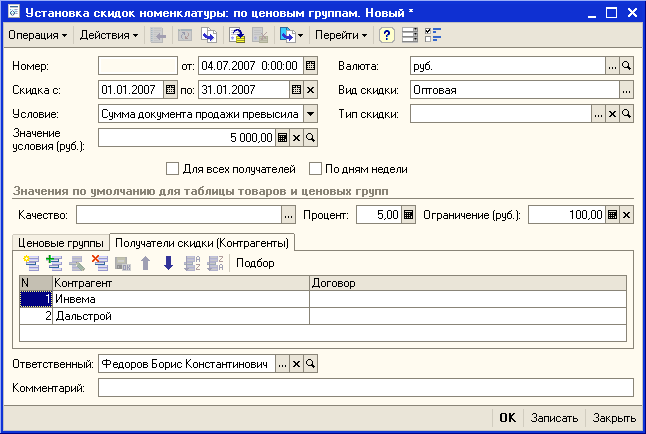
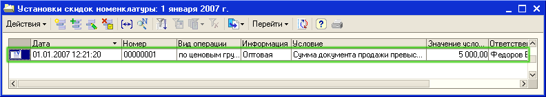
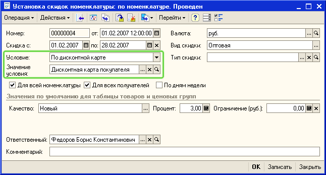

Установка скидок клиентам торгового предприятия производится документом Установка скидок номенклатуры.
Пример.
На торговом предприятии в январе устанавливается скидка 5% при покупке товаров из группы Телевизоры оптовыми покупателями на сумму более 5000 рублей. Максимальная скидка по одному товару не должна превышать 100 рублей.
Для того, чтобы установить скидку на товары одной группы, надо прежде всего отнести товары к определенной ценовой группе. Ценовую группу для товара можно указать непосредственно в карточке товара на закладке Дополнительно. Для указания ценовой группы нескольким товарам можно воспользоваться групповой обработкой справочников и документов.
1. Откройте список документов Установка скидок номенклатуры. Для этого в меню Документы выберите пункт меню Ценообразование - Установка скидок номенклатуры.
2. Введите новый документ Установка скидок номенклатуры. Для ввода нового документа используйте кнопку  (или клавишу INS, или пункт меню Действия - Добавить).
(или клавишу INS, или пункт меню Действия - Добавить).
3. В новом документе установите вид операции - По ценовым группам. Заполните реквизиты документа, так как это показано на рисунке:

На закладке Ценовые группы заполняется информация о той ценовой группе, по товарам которой назначаются скидки.
Введите информацию о покупателях, которым предоставляется скидка. Для этого перейдите на закладку Получатели скидки(Контрагенты). Используя кнопку  и кнопку выбора
и кнопку выбора  заполните информацию о покупателях, которым предоставляется скидка из справочника Контрагенты, так как это показано на рисунке:
заполните информацию о покупателях, которым предоставляется скидка из справочника Контрагенты, так как это показано на рисунке:

СОВЕТ
Выбор значения реквизита документа из справочника значительно упрощается, если Вы помните наименование элемента справочника (например, контрагента), или хотя бы начало наименования. Тогда достаточно начать вводить это наименование. Если же Вы не помните наименование элемента справочника, то необходимо воспользоваться кнопкой  или клавишей F4 для выбора элемента из полного списка. Также, как правило, полный список элементов открывается для выбора по нажатию клавиши Enter, если реквизит документа не заполнен.
или клавишей F4 для выбора элемента из полного списка. Также, как правило, полный список элементов открывается для выбора по нажатию клавиши Enter, если реквизит документа не заполнен.
ПРИМЕЧАНИЕ
Выбор элемента справочника при заполнении документа возможен не только путем ввода наименования, но и с помощью ввода кода элемента. В некоторых справочниках возможен ввод и по другим значимым реквизитам. Так, например, контрагента можно выбрать не только вводом наименования или кода, но и его ИНН.
Проведите документ, для этого нажмите на кнопку ОК. Информация о назначении скидок будет зарегистрирована в информационной базе.

Примечание.
Для отмены предоставленных скидок используется документ Отмена скидок. Документ вызывается из пункта меню Документы - Ценообразование - Отмена скидок.
Предусмотрена также возможность предоставления скидок по дисконтным картам покупателя. Информация о дисконтных картах вводится в справочник Информационные карты. Для установки скидок пор дисконтным картам в документе Установка скидок номенклатуры выберите условие По дисконтной карте или По видам дисконтных карт. В качестве значения условия укажите введенную дисконтную карту покупателя или вид дисконтной карты.

Внимание.
В том случае, если по условиям предоставления скидок на данный товар действует одновременно автоматическая скидка по условиям и скидка по дисконтной карте, то при оформлении документов продажи устанавливается максимальная из назначенных скидок.
Внимание.
Кроме автоматических скидок при продаже товаров могут применяться ручные скидки, которые назначаются в момент оформления документа продажи. Ручные скидки всегда устанавливаются дополнительно к результирующей автоматической скидке.
Только что Вы научились назначать скидки клиентам торгового предприятия. Из следующего раздела Вы узнаете, как выписать счет на оплату.